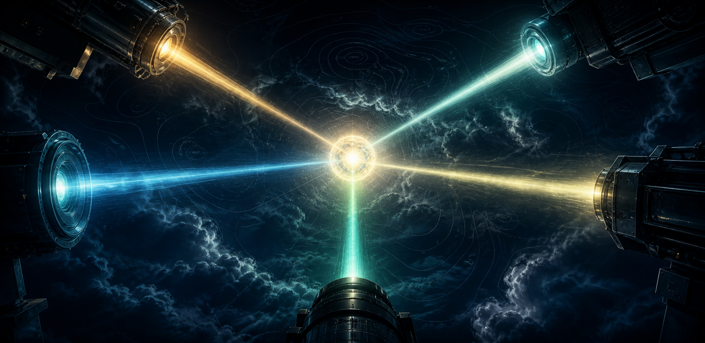
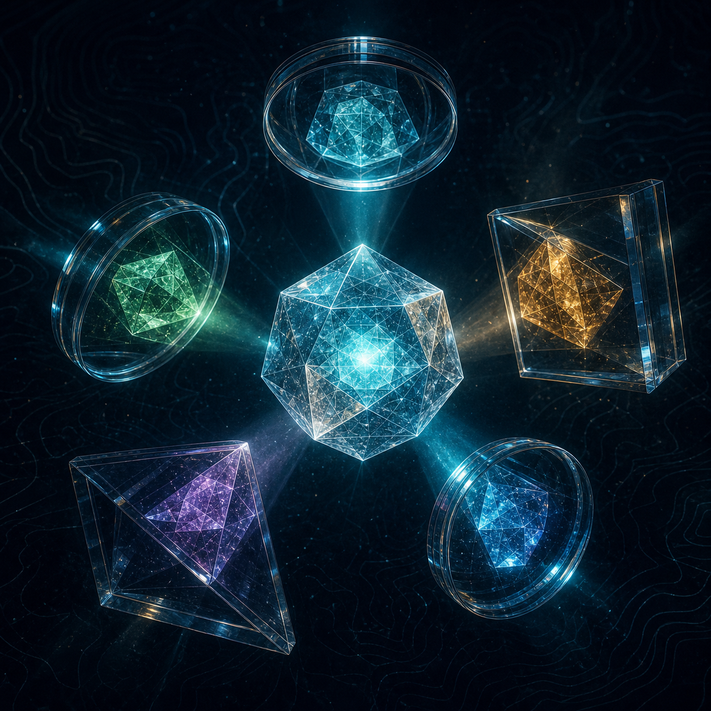
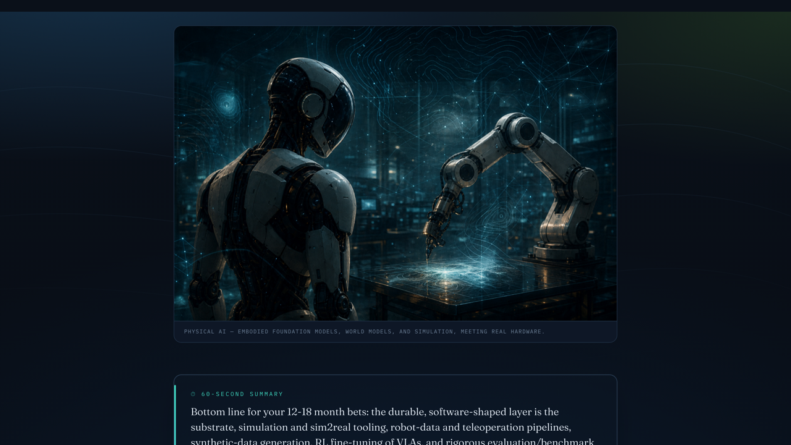

When we research something — a new framework, a build-vs-buy call, whether a tool fits a client — we usually ask one question and get one angle. STORM researches the same topic from five expert perspectives at once, maps where they disagree, and verifies every source before it trusts the answer. Here's what it is, and how we could use it on our research work.
Same method, narrated — for anyone who'd rather watch than read. Share the clip, then dive into the detail below.
A single research prompt researches from a single angle — usually the way we happened to frame it. The model is tuned to agree with that framing. The questions we didn't think to ask stay invisible, and we walk away confident about an answer that was never stress-tested.
You get a fluent, agreeable answer shaped by your framing.
Each angle finds the holes the others miss; then every claim is checked.
STORM — Synthesis of Topic Outlines through Retrieval and Multi-perspective Question Asking — is a peer-reviewed method from Stanford's OVAL lab (NAACL 2024). Its core finding: researching a topic from many discovered perspectives, where each asks its own questions, produces measurably more organized and broader coverage than a single pass. The real work happens before the writing — in how widely the topic gets interrogated.
"The more independent perspectives you have researching and contradicting each other, the more holistic the result. If you don't have the expertise, borrow it — spin up agents as little experts to kill your own blind spots."
I took that principle and packaged it into a reusable Claude skill, so one command runs the whole pipeline and returns a briefing that always looks the same.

You give it a topic and who the briefing is for. It runs four stages — five researchers in parallel, then a referee, then a synthesizer, then fact-checkers — and hands back a verified briefing.
Five expert agents research the topic in parallel — each blind to the others.
›A referee finds where they disagree and which side has the stronger evidence.
›The angles converge into ranked findings — keeping the disagreements visible.
›Fact-checkers test every citation against its primary source. V1 → V2.
›A self-contained report you can read, share, and act on.
What works in practice, what quietly breaks, what the docs never tell you.
What the literature and benchmarks actually establish vs assume.
Assumes the hype is wrong; hunts overclaims and failure modes.
Follows the cost, ROI, incentives, and what breaks at scale.
Precedent and trajectory — what's genuinely new vs recycled.
The roster is the knob. Swap or add a seat per topic — a security/compliance lens for a vendor review, a client/buyer lens for a recommendation. The lens you forget is the one that bites.

Not a wall of text — a structured briefing where the trust is on the surface.
The whole briefing, read in a minute, aimed at the decision you're making.
Each finding carries a 1–10 score from agreement-under-scrutiny, not an average.
Named explicitly — so you know what would have to be true for it to hold.
The seat nobody sat in — and an offer to re-run with it added.
Every citation checked against its primary source and marked:
The same shape as a lot of what we already do — just stress-tested. A few that map directly to our research tasks:
Catches: the maturity gap between the demo and your stack, the hidden integration cost, the migration risk a vendor page won't mention.
Catches: the true total cost of each path, and where "we'll just build it" quietly becomes a maintenance burden.
Catches: the difference between a strong paper and a production-ready pattern — with citations actually verified.
Catches: what's been tried before, what's genuinely new, and the framing question you'd otherwise walk in without.
One prompt gives you a confident answer. STORM gives you a confident answer plus the strongest case against it, and tells you which parts survived. You learn where the answer is solid and where it's thin.
A broad sweep returns a lot of unranked text with few checked sources. STORM adds the contradiction map, reliability ranking, and citation verification — with about a dozen agents, not a hundred.
The lenses use web search — your topic and queries leave the machine. So this is a tool for public, general research: industry, tools, methods, markets, techniques. For anything client-specific or internal, run it inside SoftServe-approved tooling and never feed customer IP, code, or internal strategy into web-searching agents without the right approval. Same data-classification discipline we already apply everywhere else.
It's a Claude Code skill — a short SOP file, a small workflow that fans out the agents, and a template that renders the briefing. The principle is portable to any agent setup; the packaging is what makes it one command.
Something contested or high-stakes you actually need to research — not a quick fact.
Who the briefing is for and what they'll decide with it. Tune the lens roster to the topic.
One command runs storm-research; you get a verified briefing back. Then refine the lenses for next time.
Not a mockup. Here's a real briefing STORM produced, start to finish, on a genuine research question: the future of physical AI in robotics.
Eleven findings, each ranked by reliability, every source checked against its original, and a cross-model review that demoted the overconfident ones. Don't take my word for it — open it and read the real thing:

Generated by the skill, reviewed by a different model, and rendered automatically — the same pipeline you'd run on your own question.